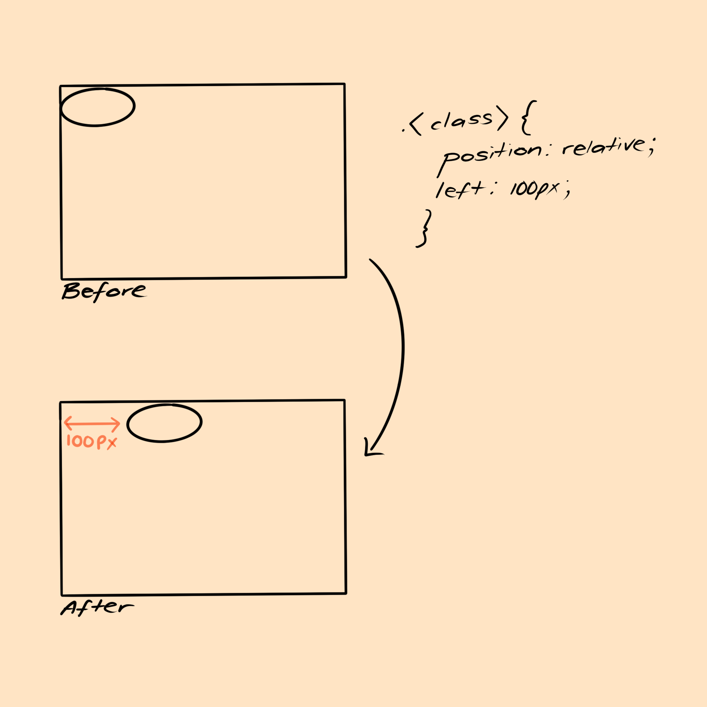
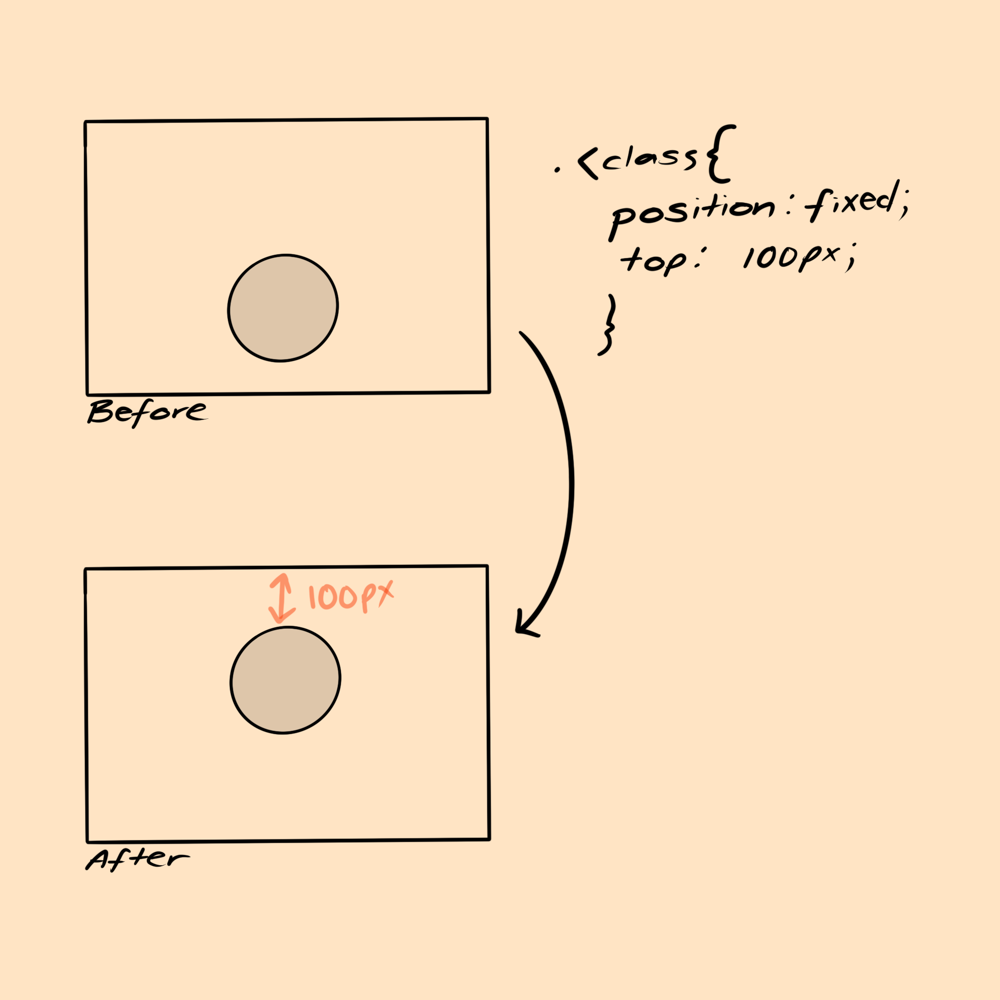

When repositioning an element, you can apply either a negative or positive value to any of the four properties (top, bottom, left, right)
A positive value will always offset the element going inward, and a negative value will always offset the element going outward.
Please see image for reference.
Relative positioning is positioning an element in relevance to its place of origin without adjusting the positioning of any other elements (or in other words, it will not disrupt/change the document flow*). Positioning an element relatively, means to add space (using top, bottom, left and right properties and the position value) between the elements place of
origin and the elements desired placing.
An example of this would be if an image was positioned in the top left corner of a webpage, and the goal was to position that image 100px to the right without distrupting the positioning of any other element.
The element is the image, the property is left, and the position value is 100px. We would use relative positioning to put 100px of space to the left of the element in order to push it 100px to the right.

Absolute positioning is positioning an element in accordance to another element. Absolute positioning always invloves two elements; the parent element, and the child element.
The parent element (the already positioned element) is what the child elements (the element being positioned) goal positioning is based off of.
An example of this is if a large red box and a smaller yellow box are positioned on a webpage with the yellow box within the red box, and the goal was to move the yellow box outside of the
red box by 100px to the left of the red box's position. Unlike relative positioning, the yellow box would not just move 100px to the left from its original position,but it would be repositioned to 100px to the left of the red box.
Fixed positioning is always positioned in accordance to the view port or the browser window itself. To position an element (i.e and image) that is fixed, would mean the property (i.e top) and position value (i.e 100px) would move that element in accordance to the browser window (i.e 100px from the top of the browser window). Please see images for reference. 
*"Document flow is the arrangement of page elements, as defined by CSS positioning statements, and the order of HTML elements. This is to say, how each element takes up space and how other elements position themselves accordingly" Source: Rosato, J. (2018, December 21). What is document flow? Retrieved February 11, 2021, from here